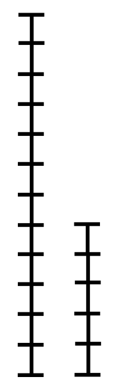

-
Binary Search Algorithm

// C++ program to implement recursive Binary Search #include <bits/stdc++.h> using namespace std; // A recursive binary search function. It returns // location of x in given array arr[l..r] is present, // otherwise -1 int binarySearch(int arr[], int l, int r, int x) { if (r >= l) { int mid = l + (r - l) / 2; // If the element is present at the middle // itself if (arr[mid] == x) return mid; // If element is smaller than mid, then // it can only be present in left subarray if (arr[mid] > x) return binarySearch(arr, l, mid - 1, x); // Else the element can only be present // in right subarray return binarySearch(arr, mid + 1, r, x); } // We reach here when element is not // present in array return -1; } int main(void) { int arr[] = { 2, 3, 4, 10, 40 }; int x = 10; int n = sizeof(arr) / sizeof(arr[0]); int result = binarySearch(arr, 0, n - 1, x); (result == -1) ? cout << "Element is not present in array" : cout << "Element is present at index " << result; return 0; } -
Breadth First Search (BFS) Algorithm

// Program to print BFS traversal from a given // source vertex. BFS(int s) traverses vertices // reachable from s. #include<bits/stdc++.h> using namespace std; // This class represents a directed graph using // adjacency list representation class Graph { int V; // No. of vertices // Pointer to an array containing adjacency // lists vector<list<int>> adj; public: Graph(int V); // Constructor // function to add an edge to graph void addEdge(int v, int w); // prints BFS traversal from a given source s void BFS(int s); }; Graph::Graph(int V) { this->V = V; adj.resize(V); } void Graph::addEdge(int v, int w) { adj[v].push_back(w); // Add w to v’s list. } void Graph::BFS(int s) { // Mark all the vertices as not visited vector<bool> visited; visited.resize(V,false); // Create a queue for BFS list<int> queue; // Mark the current node as visited and enqueue it visited[s] = true; queue.push_back(s); while(!queue.empty()) { // Dequeue a vertex from queue and print it s = queue.front(); cout << s << " "; queue.pop_front(); // Get all adjacent vertices of the dequeued // vertex s. If a adjacent has not been visited, // then mark it visited and enqueue it for (auto adjecent: adj[s]) { if (!visited[adjecent]) { visited[adjecent] = true; queue.push_back(adjecent); } } } } // Driver program to test methods of graph class int main() { // Create a graph given in the above diagram Graph g(4); g.addEdge(0, 1); g.addEdge(0, 2); g.addEdge(1, 2); g.addEdge(2, 0); g.addEdge(2, 3); g.addEdge(3, 3); cout << "Following is Breadth First Traversal " << "(starting from vertex 2) \n"; g.BFS(2); return 0; } -
Depth First Search (DFS) Algorithm

// C++ program to print DFS traversal from // a given vertex in a given graph #include <bits/stdc++.h> using namespace std; // Graph class represents a directed graph // using adjacency list representation class Graph { public: map<int, bool> visited; map<int, list<int> > adj; // function to add an edge to graph void addEdge(int v, int w); // DFS traversal of the vertices // reachable from v void DFS(int v); }; void Graph::addEdge(int v, int w) { adj[v].push_back(w); // Add w to v’s list. } void Graph::DFS(int v) { // Mark the current node as visited and // print it visited[v] = true; cout << v << " "; // Recur for all the vertices adjacent // to this vertex list<int>::iterator i; for (i = adj[v].begin(); i != adj[v].end(); ++i) if (!visited[*i]) DFS(*i); } // Driver's code int main() { // Create a graph given in the above diagram Graph g; g.addEdge(0, 1); g.addEdge(0, 2); g.addEdge(1, 2); g.addEdge(2, 0); g.addEdge(2, 3); g.addEdge(3, 3); cout << "Following is Depth First Traversal" " (starting from vertex 2) \n"; // Function call g.DFS(2); return 0; } -
Merge Sort Algorithm

// C++ program for Merge Sort #include <iostream> using namespace std; // Merges two subarrays of array[]. // First subarray is arr[begin..mid] // Second subarray is arr[mid+1..end] void merge(int array[], int const left, int const mid, int const right) { auto const subArrayOne = mid - left + 1; auto const subArrayTwo = right - mid; // Create temp arrays auto *leftArray = new int[subArrayOne], *rightArray = new int[subArrayTwo]; // Copy data to temp arrays leftArray[] and rightArray[] for (auto i = 0; i < subArrayOne; i++) leftArray[i] = array[left + i]; for (auto j = 0; j < subArrayTwo; j++) rightArray[j] = array[mid + 1 + j]; auto indexOfSubArrayOne = 0, // Initial index of first sub-array indexOfSubArrayTwo = 0; // Initial index of second sub-array int indexOfMergedArray = left; // Initial index of merged array // Merge the temp arrays back into array[left..right] while (indexOfSubArrayOne < subArrayOne && indexOfSubArrayTwo < subArrayTwo) { if (leftArray[indexOfSubArrayOne] <= rightArray[indexOfSubArrayTwo]) { array[indexOfMergedArray] = leftArray[indexOfSubArrayOne]; indexOfSubArrayOne++; } else { array[indexOfMergedArray] = rightArray[indexOfSubArrayTwo]; indexOfSubArrayTwo++; } indexOfMergedArray++; } // Copy the remaining elements of // left[], if there are any while (indexOfSubArrayOne < subArrayOne) { array[indexOfMergedArray] = leftArray[indexOfSubArrayOne]; indexOfSubArrayOne++; indexOfMergedArray++; } // Copy the remaining elements of // right[], if there are any while (indexOfSubArrayTwo < subArrayTwo) { array[indexOfMergedArray] = rightArray[indexOfSubArrayTwo]; indexOfSubArrayTwo++; indexOfMergedArray++; } delete[] leftArray; delete[] rightArray; } // begin is for left index and end is // right index of the sub-array // of arr to be sorted */ void mergeSort(int array[], int const begin, int const end) { if (begin >= end) return; // Returns recursively auto mid = begin + (end - begin) / 2; mergeSort(array, begin, mid); mergeSort(array, mid + 1, end); merge(array, begin, mid, end); } // UTILITY FUNCTIONS // Function to print an array void printArray(int A[], int size) { for (auto i = 0; i < size; i++) cout << A[i] << " "; } // Driver code int main() { int arr[] = { 12, 11, 13, 5, 6, 7 }; auto arr_size = sizeof(arr) / sizeof(arr[0]); cout << "Given array is \n"; printArray(arr, arr_size); mergeSort(arr, 0, arr_size - 1); cout << "\nSorted array is \n"; printArray(arr, arr_size); return 0; } -
Dijkstra's Algorithm

// A C++ program for Dijkstra's single source shortest path algorithm. // The program is for adjacency matrix representation of the graph #include <limits.h> #include <stdio.h> // Number of vertices in the graph #define V 9 // A utility function to find the vertex with minimum distance value, from // the set of vertices not yet included in shortest path tree int minDistance(int dist[], bool sptSet[]) { // Initialize min value int min = INT_MAX, min_index; for (int v = 0; v < V; v++) if (sptSet[v] == false && dist[v] <= min) min = dist[v], min_index = v; return min_index; } // A utility function to print the constructed distance array int printSolution(int dist[], int n) { printf("Vertex Distance from Source\n"); for (int i = 0; i < V; i++) printf("%d \t\t %d\n", i, dist[i]); } // Function that implements Dijkstra's single source shortest path algorithm // for a graph represented using adjacency matrix representation void dijkstra(int graph[V][V], int src) { int dist[V]; // The output array. dist[i] will hold the shortest // distance from src to i bool sptSet[V]; // sptSet[i] will be true if vertex i is included in shortest // path tree or shortest distance from src to i is finalized // Initialize all distances as INFINITE and stpSet[] as false for (int i = 0; i < V; i++) dist[i] = INT_MAX, sptSet[i] = false; // Distance of source vertex from itself is always 0 dist[src] = 0; // Find shortest path for all vertices for (int count = 0; count < V - 1; count++) { // Pick the minimum distance vertex from the set of vertices not // yet processed. u is always equal to src in the first iteration. int u = minDistance(dist, sptSet); // Mark the picked vertex as processed sptSet[u] = true; // Update dist value of the adjacent vertices of the picked vertex. for (int v = 0; v < V; v++) // Update dist[v] only if is not in sptSet, there is an edge from // u to v, and total weight of path from src to v through u is // smaller than current value of dist[v] if (!sptSet[v] && graph[u][v] && dist[u] != INT_MAX && dist[u] + graph[u][v] < dist[v]) dist[v] = dist[u] + graph[u][v]; } // print the constructed distance array printSolution(dist, V); } // driver program to test above function int main() { /* Let us create the example graph discussed above */ int graph[V][V] = { { 0, 4, 0, 0, 0, 0, 0, 8, 0 }, { 4, 0, 8, 0, 0, 0, 0, 11, 0 }, { 0, 8, 0, 7, 0, 4, 0, 0, 2 }, { 0, 0, 7, 0, 9, 14, 0, 0, 0 }, { 0, 0, 0, 9, 0, 10, 0, 0, 0 }, { 0, 0, 4, 14, 10, 0, 2, 0, 0 }, { 0, 0, 0, 0, 0, 2, 0, 1, 6 }, { 8, 11, 0, 0, 0, 0, 1, 0, 7 }, { 0, 0, 2, 0, 0, 0, 6, 7, 0 } }; dijkstra(graph, 0); return 0; } -
Quicksort Algorithm

/* C++ implementation of QuickSort */ #include <bits/stdc++.h> using namespace std; // A utility function to swap two elements void swap(int* a, int* b) { int t = *a; *a = *b; *b = t; } /* This function takes last element as pivot, places the pivot element at its correct position in sorted array, and places all smaller (smaller than pivot) to left of pivot and all greater elements to right of pivot */ int partition(int arr[], int low, int high) { int pivot = arr[high]; // pivot int i = (low - 1); // Index of smaller element and indicates // the right position of pivot found so far for (int j = low; j <= high - 1; j++) { // If current element is smaller than the pivot if (arr[j] < pivot) { i++; // increment index of smaller element swap(&arr[i], &arr[j]); } } swap(&arr[i + 1], &arr[high]); return (i + 1); } /* The main function that implements QuickSort arr[] --> Array to be sorted, low --> Starting index, high --> Ending index */ void quickSort(int arr[], int low, int high) { if (low < high) { /* pi is partitioning index, arr[p] is now at right place */ int pi = partition(arr, low, high); // Separately sort elements before // partition and after partition quickSort(arr, low, pi - 1); quickSort(arr, pi + 1, high); } } /* Function to print an array */ void printArray(int arr[], int size) { int i; for (i = 0; i < size; i++) cout << arr[i] << " "; cout << endl; } // Driver Code int main() { int arr[] = { 10, 7, 8, 9, 1, 5 }; int n = sizeof(arr) / sizeof(arr[0]); quickSort(arr, 0, n - 1); cout << "Sorted array: \n"; printArray(arr, n); return 0; } -
Euclid's Algorithm
// C++ program to demonstrate // Basic Euclidean Algorithm #include <bits/stdc++.h> using namespace std; // Function to return // gcd of a and b int gcd(int a, int b) { if (a == 0) return b; return gcd(b % a, a); } // Driver Code int main() { int a = 10, b = 15; // Function call cout << "GCD(" << a << ", " << b << ") = " << gcd(a, b) << endl; a = 35, b = 10; cout << "GCD(" << a << ", " << b << ") = " << gcd(a, b) << endl; a = 31, b = 2; cout << "GCD(" << a << ", " << b << ") = " << gcd(a, b) << endl; return 0; }